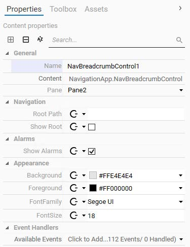
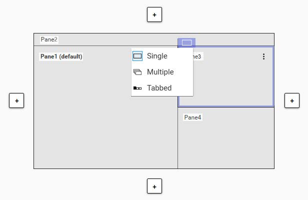
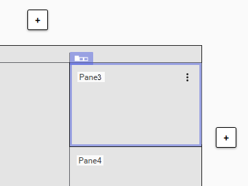
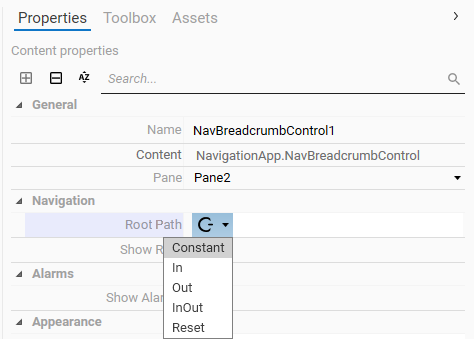
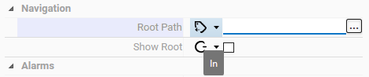
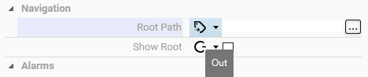
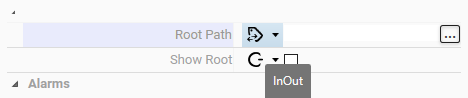
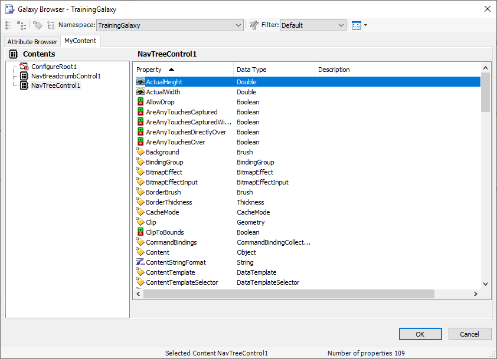
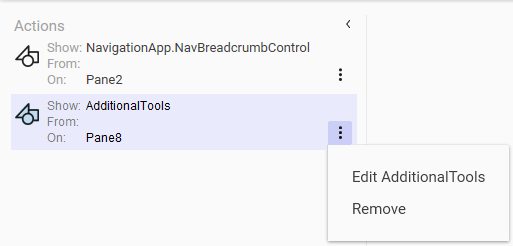

AVEVA™ Operations Management Interface 2023 — Module 4: ViewApp Application Customizations
Pages 301–308 (Section 2 – Layout and Pane Customizations, pp. 4-15 to 4-22)
Once you have created layouts and assigned content to panes, there are numerous customization options available to fine-tune how your ViewApp looks and behaves at runtime. This section covers the key layout and pane properties that control sizing, display modes, appearance, and interaction behavior. Understanding these properties is essential for creating polished, professional operator interfaces that respond well to different screen sizes and user workflows.
When you select the entire layout in the Layout Editor (by clicking outside of any pane), the Properties tab displays layout-level properties. These properties control the overall behavior of the layout, including its title, content type, target display, and dimensions.
The Content Type(s) property determines which content types the layout can display. For example, setting it to Detailed means the layout will appear when the ViewApp navigates to content of that type. The Title Mode property controls how the layout title is displayed, with options like IncludeDefaultPaneContent that pull the title from the default pane's content.
Each pane within a layout has its own set of properties organized into several groups. These properties control the pane's size, content assignment, appearance, and interaction behavior.
| Property | Description |
|---|---|
| Content Type(s) | Defines what content types this pane can display (e.g., Overview, Detailed). Multiple types can be assigned using comma separation. |
| Use For Auto-Fill | When checked, this pane will be filled automatically by the AutoFill mechanism if it has no manually assigned content. |
| Property | Description |
|---|---|
| Width / Height | The fixed or initial dimension of the pane in pixels. |
| Width Sizing / Height Sizing | Determines how the pane resizes: Fixed (constant size), Variable (flexible), or proportional. |
| Minimum Width / Height | The smallest allowed dimension for the pane. |
| Maximum Width / Height | The largest allowed dimension for the pane. |
| Hide Column/Row When Empty | When checked, the pane collapses if it has no content assigned. |
| Property | Description |
|---|---|
| Background | Sets the background color using RGBA hex codes (e.g., #FFE4E4E4). The Alpha channel controls transparency. |
| Padding | Adds blank-space pixels between the pane border and its content (format: top,right,bottom,left). |
| Interaction Mode | Controls runtime interaction: None, PanAndZoom, or other modes. |
| Display Mode | Controls how content is displayed: MaintainAspect, Stretch, etc. |

When multiple panes are arranged in a layout, you can control how they are displayed using the display mode dropdown. This dropdown appears on the pane divider and offers three modes:
| Mode | Description |
|---|---|
| Single | Displays content in one full pane at a time, hiding the others. Useful for focused views. |
| Multiple | Shows all panes simultaneously in a split layout. This is the default for most layouts. |
| Tabbed | Groups panes into tabs, allowing the user to switch between them by clicking tab headers. |


Layouts can include built-in navigation controls that help users move through the application hierarchy. The two primary navigation controls are the NavBreadcrumbControl and the NavTreeControl, both of which are available in the Toolbox.
The breadcrumb control displays the current navigation path as a series of clickable items (e.g., Assets → Plant → Production → Line1 → Mixer100). It provides quick access to any level of the hierarchy. Key properties include:




The tree control displays a hierarchical navigation tree that users can expand and collapse to navigate through the plant model. It is typically assigned to a slide-in pane and provides a comprehensive view of the asset hierarchy. The NavTreeControl has an extensive property list for customization, including background, border, content template, and data binding options.

Controls can be configured with Show actions that make other controls visible when triggered. This is useful for creating conditional UI elements that appear or disappear based on user interaction. The Actions panel lists all configured Show actions, with each action specifying the target control, source pane, and trigger condition.

00 makes the pane fully transparent (e.g., #00E4E4E4), which is useful for overlay panes that should not obscure content behind them.
Single (one pane at a time), Multiple (all panes visible in split view), and Tabbed (panes grouped as switchable tabs).
Set the Alpha channel of the Background color to 0 (e.g., #00E4E4E4). The first two digits of the RGBA hex code control transparency.
The layout-level Content Type determines when the entire layout appears in the ViewApp (based on navigation context). The pane-level Content Type determines what kind of content that specific pane can display.
When checked, the pane collapses and takes up no space if it has no content assigned, preventing empty gaps in the layout.